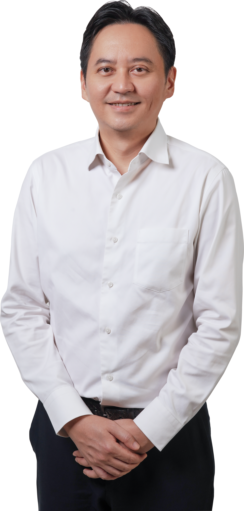

Ben Fong Kok Seng 方国昇
Community leader, entrepreneur and writer with a strong interest in Kuala Lumpur, urban governance, public policy and community development.

Community, business and public life.
Ben Fong Kok Seng (方国昇) is a Kuala Lumpur-based community leader, entrepreneur and writer whose interests span community development, urban governance, business and public policy.
Much of his community work centres on Bukit Bintang, one of Kuala Lumpur's most diverse urban areas. Working with residents, community organisations and government agencies, he engages on practical issues affecting neighbourhoods, including infrastructure, cleanliness, safety, mobility, public amenities and community welfare.
His background in business and entrepreneurship informs his interest in economic opportunity, local enterprise, effective governance and how public policies affect people's everyday lives.
Through published writing and public engagement, Ben contributes perspectives on Kuala Lumpur, governance, the economy and Malaysia's future, drawing on both his business experience and community work.
Public & community responsibilities.
Chairman
MPPWP Zon Bukit Bintang
Treasurer
DAP Federal Territory Kuala Lumpur
Member
WPKL Excise Licensing Board
Council Member & Management Committee Member
Majlis Sukan Wilayah Persekutuan (MSWP)
Working with communities.
Ben's community work focuses on practical neighbourhood improvements and creating opportunities for residents to participate in the development of their communities.
His areas of engagement include local infrastructure, education, youth and sports, community welfare, sustainability, public spaces and urban mobility.
Working across Bukit Bintang has also shaped his broader interest in how Kuala Lumpur can become a more liveable, inclusive and well-governed city.
Experience beyond public life.
Alongside his community responsibilities, Ben has experience in business and entrepreneurship, including building and managing businesses in the digital economy.
His professional background provides a practical perspective on business operations, entrepreneurship, economic development and the challenges facing local enterprises.
Thoughts on our city and country.
Ben writes about public policy, governance, urban development, community issues, the economy and Malaysian public life.
His published commentary draws on practical experiences in community engagement and business, alongside a broader interest in Malaysia's institutions and future.
Stay connected.
Follow Ben's community activities, writing and public engagement through social media.